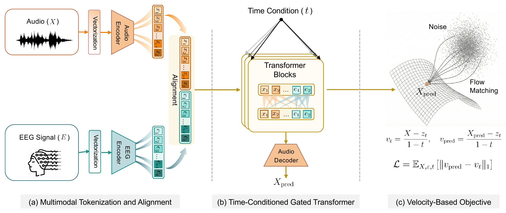
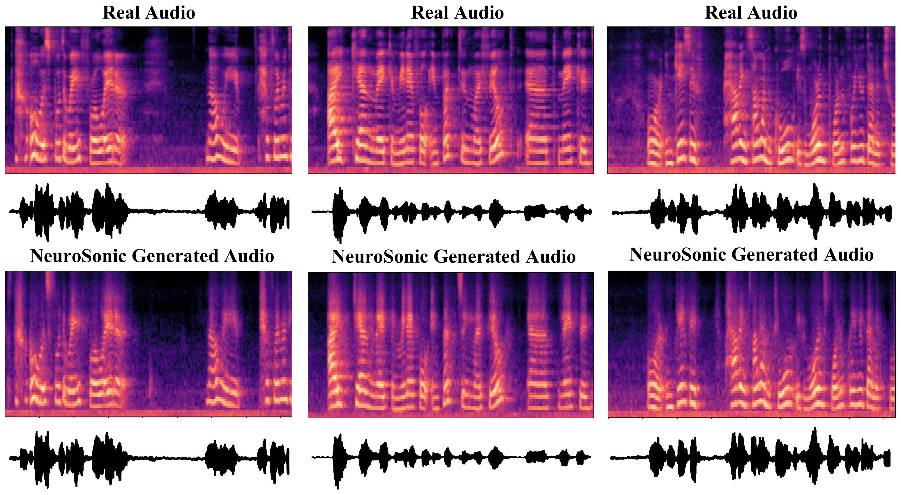
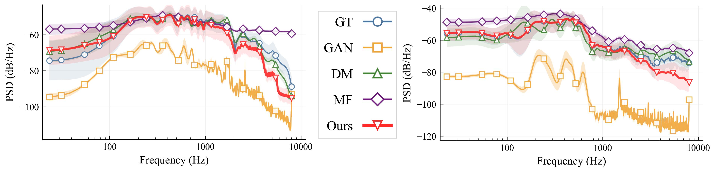

Overview of NeuroSonic. EEG and audio signals are embedded into a shared token space and processed by a time-conditioned gated Transformer that parameterizes the probability-flow ordinary differential equation.
Reconstructing continuous speech from scalp electroencephalography (EEG) entails coupling two signals with markedly different structure. EEG recordings are low-amplitude, spatially diffuse projections of distributed cortical sources, while speech evolves along a highly organized acoustic trajectory characterized by harmonic structure and temporal coherence.
NeuroSonic formulates EEG-to-speech reconstruction as conditional acoustic transport. Instead of predicting waveforms in a single step or refining them through stochastic sampling, it learns a deterministic velocity field that maps corrupted acoustic states toward clean speech under EEG conditioning.
Given paired EEG-audio samples \((E, X)\), NeuroSonic constructs a corrupted acoustic state \(z_t = tX + (1-t)\epsilon\), where \(\epsilon \sim \mathcal{N}(0, I)\), and learns a velocity field that transports \(z_t\) toward clean speech under EEG conditioning.
At inference, the learned ODE is integrated from \(t=0\) to \(t=1\) using a fixed-step Heun solver, yielding deterministic reconstruction conditioned on neural activity.
Rather than regressing waveforms directly, NeuroSonic supervises transport dynamics in velocity space. This anchors learning on clean acoustic states and improves robustness under low-SNR and heterogeneous neural conditioning.
The videos visualize generated speech waveforms from NeuroSonic reconstructions. Each clip pairs the reconstructed acoustic trajectory with its corresponding dataset setting.
Waveform visualization for a CineBrain reconstruction generated from EEG conditioning.
Waveform visualization for an EAV reconstruction generated from EEG conditioning.
NeuroSonic is evaluated on CineBrain and EAV under cross-subject evaluation. Across both datasets, it improves distributional realism, spectral fidelity, and perceptual quality compared with representative GAN-, diffusion-, and mean-flow baselines.
| Dataset | Method | FAD ↓ | LSD ↓ | SC ↓ | Time (s) ↓ |
|---|---|---|---|---|---|
| CineBrain | MF | 173.65 ± 0.26 | 69.78 ± 0.11 | 1.34 ± 0.09 | 0.04 |
| CineBrain | GAN | 57.12 ± 3.49 | 15.13 ± 0.14 | 1.25 ± 0.11 | 0.02 |
| CineBrain | DM | 72.56 ± 1.69 | 22.08 ± 0.07 | 1.12 ± 0.04 | 2.00 |
| CineBrain | NeuroSonic | 39.06 ± 0.52 | 14.24 ± 0.31 | 0.64 ± 0.04 | 0.86 |
| EAV | MF | 85.27 ± 0.80 | 29.25 ± 0.64 | 1.49 ± 0.06 | 0.04 |
| EAV | GAN | 39.47 ± 0.83 | 15.71 ± 0.34 | 1.00 ± 0.01 | 0.02 |
| EAV | DM | 15.87 ± 6.78 | 19.47 ± 0.25 | 1.25 ± 0.10 | 2.08 |
| EAV | NeuroSonic | 11.64 ± 1.17 | 12.98 ± 0.16 | 0.28 ± 0.02 | 1.40 |

Ground-truth speech and NeuroSonic reconstructions. The reconstructed signals exhibit coherent formant trajectories and temporal modulation patterns consistent with the reference.

NeuroSonic aligns most closely with the ground-truth PSD in the low-frequency band that dominates perceived speech quality.
GAN outputs exhibit broader spectral deviations, while diffusion models show increased energy in higher-frequency regions.
| Dataset | Method | SIG ↑ | BAK ↑ | OVRL ↑ |
|---|---|---|---|---|
| CineBrain | GT | 2.41 | 1.75 | 1.67 |
| CineBrain | MF | 1.20 ± 0.01 | 1.10 ± 0.01 | 1.10 ± 0.01 |
| CineBrain | GAN | 1.26 ± 0.03 | 1.29 ± 0.01 | 1.14 ± 0.01 |
| CineBrain | DM | 1.21 ± 0.00 | 1.33 ± 0.01 | 1.07 ± 0.00 |
| CineBrain | NeuroSonic | 1.95 ± 0.04 | 1.64 ± 0.04 | 1.44 ± 0.01 |
| EAV | GT | 3.32 | 2.77 | 2.47 |
| EAV | MF | 1.19 ± 0.01 | 1.12 ± 0.01 | 1.08 ± 0.01 |
| EAV | GAN | 1.98 ± 0.01 | 2.62 ± 0.05 | 1.45 ± 0.01 |
| EAV | DM | 2.92 ± 0.04 | 2.95 ± 0.10 | 2.29 ± 0.11 |
| EAV | NeuroSonic | 3.31 ± 0.02 | 3.07 ± 0.04 | 2.59 ± 0.03 |
The direct \(x\)-loss variant can approximate coarse distributional properties, but consistently degrades LSD, SC, and all DNSMOS components across both datasets.
Matching endpoints does not constrain the path from noisy to clean states, whereas velocity supervision explicitly trains the transport dynamics.
| Dataset | Method | FAD ↓ | LSD ↓ | SC ↓ | SIG ↑ | BAK ↑ | OVRL ↑ |
|---|---|---|---|---|---|---|---|
| CineBrain | x-loss | 32.23 | 14.27 | 0.91 | 1.45 | 1.30 | 1.18 |
| CineBrain | NeuroSonic | 39.06 | 14.24 | 0.64 | 1.95 | 1.64 | 1.44 |
| EAV | x-loss | 12.14 | 13.45 | 0.90 | 3.07 | 2.66 | 2.28 |
| EAV | NeuroSonic | 11.64 | 12.98 | 0.28 | 3.31 | 3.07 | 2.59 |
@inproceedings{gao2026neurosonic,
title = {NeuroSonic: Conditional Flow Matching for EEG-to-Speech Reconstruction},
author = {Gao, Wenhao and Wang, Yifan and Ma, Yijia and Yang, Carl and Li, Wen and You, Chenyu},
booktitle = {Medical Image Computing and Computer Assisted Intervention (MICCAI)},
year = {2026}
}